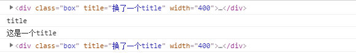
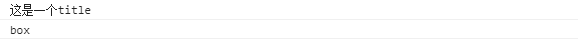
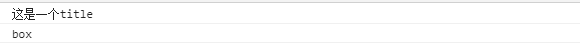
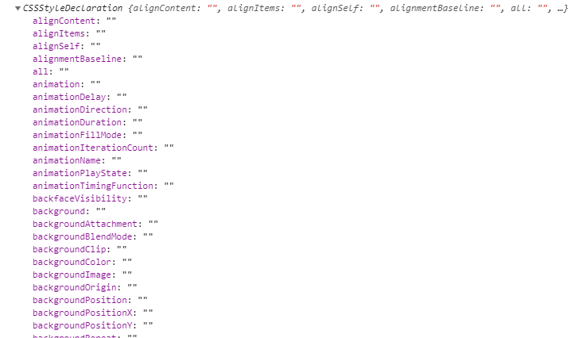
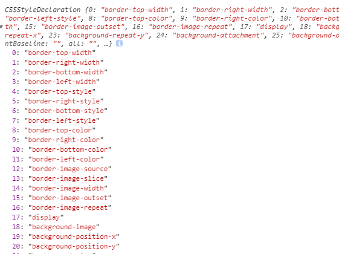
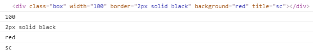
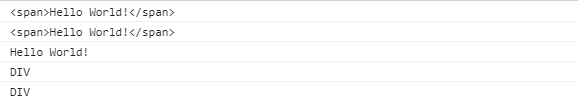
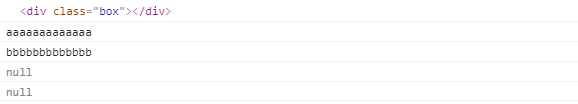
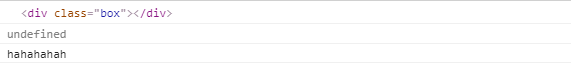
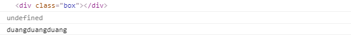

DOM（属性节点）
<div class="box" title="这是一个title" width="400"></div>
<script type="text/javascript">
var oBox = document.querySelector(".box");
console.log(oBox);
// 属性节点
console.log(oBox.attributes[1].nodeName);
console.log(oBox.attributes[1].nodeValue);
oBox.attributes[1].nodeValue = "换了一个title";
console.log(oBox);
</script>
我们都知道，属性分为内置和自定义，那么我们以此为分类依据来解析属性的操作。
内置（系统提供的）
1.使用对象的操作（注意class,是个关键字,需要改成className）
点语法
<div class="box" title="这是一个title" width="400"></div>
<script type="text/javascript">
var oBox = document.querySelector(".box");
console.log(oBox.title);
console.log(oBox.className);
</script>
中括号语法<div class="box" title="这是一个title" width="400"></div>
<script type="text/javascript">
var oBox = document.querySelector(".box");
console.log(oBox["title"]);
console.log(oBox["className"]);
</script>
【注】其中style属性包含了几乎所有的样式，可以通过style.属性名的方式来获取和设置，先来看一下该属性里的信息
<div class="box"></div>
<script type="text/javascript">
var oBox = document.querySelector(".box");
console.log(oBox.style);
</script>
我们可以看到，里面包含了几乎所有的CSS样式，只不过因为没有设置，都是空字符，下面我们来设置一些，看一些有没有改变
<script type="text/javascript">
var oBox = document.querySelector(".box");
oBox.style.border = "solid 2px black";
oBox.style.display = "block";
oBox.style.left = "10";
oBox.style.background = "red";
console.log(oBox.style);
</script>
我们可以看到，设置是成功的，不过比起一个一个来设置，有一条属性可以同时设置多个样式，而且还可以直接写CSS语句，语义化更强，更符合逻辑，下面来测试一下
<div class="box"></div>
<script type="text/javascript">
var oBox = document.querySelector(".box");
oBox.style.cssText = "width:100px;height:200px;";
console.log(oBox.style);
</script>那么，style.cssText属性将是我们操作系统内置可见属性的利器
2.attribute系列
该系列可以获取、设置以及删除属性节点，后面可见自定义的属性操作也是使用该系列
<div class="box" width="100" height="200" border="2px solid black"></div>
<script type="text/javascript">
var oBox = document.querySelector(".box");
console.log(oBox);
oBox.setAttribute("background","red");
oBox.setAttribute("title","sc");
console.log(oBox.getAttribute("width"));
console.log(oBox.getAttribute("border"));
console.log(oBox.getAttribute("background"));
console.log(oBox.getAttribute("title"));
oBox.removeAttribute("height");
</script> 
使用对象的操作
<div class="box"><span>Hello World!</span></div>
<script type="text/javascript">
var oBox = document.querySelector(".box");
// innerHTML能解析能获取标签
// innerText不能解析不能获取标签
console.log(oBox.innerHTML);
console.log(oBox["innerHTML"]);
console.log(oBox.innerText);
console.log(oBox.tagName);
console.log(oBox.nodeName);
</script>
自定义（自己设置）
attribute系列
<div class="box"></div>
<script type="text/javascript">
var oBox = document.querySelector(".box");
console.log(oBox);
oBox.setAttribute("a","aaaaaaaaaaaaa");
oBox.setAttribute("b","bbbbbbbbbbbbb");
console.log(oBox.getAttribute("a"));
console.log(oBox.getAttribute("b"));
oBox.removeAttribute("a");
oBox.removeAttribute("b");
console.log(oBox.getAttribute("a"));
console.log(oBox.getAttribute("b"));
</script>
使用对象的操作
点语法
<div class="box"></div>
<script type="text/javascript">
var oBox = document.querySelector(".box");
console.log(oBox);
console.log(oBox.qwe);
oBox.qwe = "hahahahah";
console.log(oBox.qwe);
</script>
中括号语法<div class="box"></div>
<script type="text/javascript">
var oBox = document.querySelector(".box");
console.log(oBox);
console.log(oBox["asd"]);
oBox["asd"] = "duangduangduang";
console.log(oBox["asd"]);
</script>